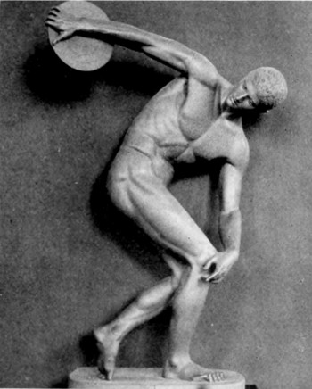
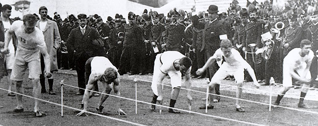
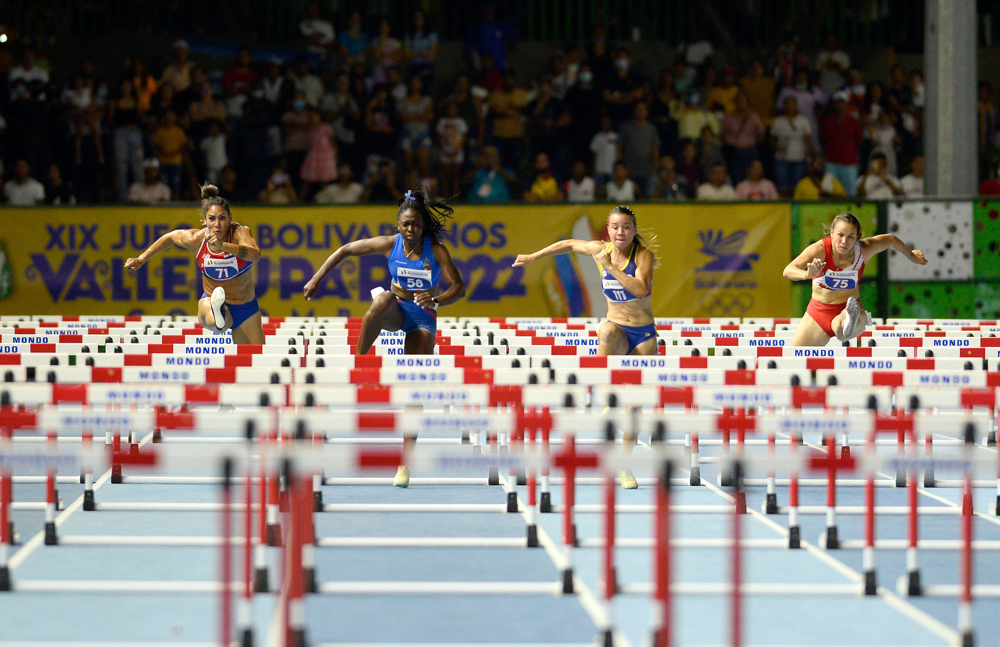

Ante todo comencemos abordando el origen etimológico del término atletismo. Básicamente podemos determinar que procede de atletes que se define como “aquella persona que compite en una prueba determinada por un premio” y todo ello sin olvidar tampoco que dicha palabra griega está en relación del vocablo aethos que es sinónimo de esfuerzo.
El atletismo es la forma organizada más antigua de deporte y se viene celebrando desde hace miles de años. Las primeros eventos deportivos de la historia fueron los juegos olímpicos que iniciaron los griegos en el año 776 a.c. Durante muchos años el principal evento olímpico fue el pentatlón que comprendía lanzamientos de disco y jabalina, carreras pedestres, salto de longitud y lucha libre.

Versión restaurada del Discóbolo de Mirón hecha en Munich disponible en Wikimedia
Los romanos continuaron celebrando las pruebas olímpicas después de conquistar Grecia en el 146 a.c. En el año 394 de nuestra era el emperador romano Teodosio abolió los juegos y durante ocho siglos no se celebraron competiciones organizadas de atletismo.
En Inglaterra alrededor de la mitad del siglo XIX se retoman las pruebas atléticas y se convirtieron gradualmente en el deporte favorito de los ingleses.
En 1834 un grupo de entusiastas de esta nacionalidad acordaron los mínimos exigibles para competir en determinadas pruebas. También en el siglo XIX se realizaron las primeras reuniones atléticas universitarias entre las universidades de Oxford y Cambridge (1864) el primer mitin nacional en Londres (1866) y el primer mitin amateur celebrado en Estados Unidos en pista cubierta (1868). El atletismo posteriormente se expandió en Europa y América.
En 1896 se iniciaron en Atenas los juegos olímpicos una modificación de los antiguos juegos que los griegos celebraban en Olimpia. Más tarde los juegos se han celebrado en varios países a intervalos de cuatro años excepto en tiempo de guerra (años 1916, 1940 y 1944).

Juegos olimpicos modernos. Londres 1896 imagen disponible en emol
En 1913 se fundó la Federación Internacional de Atletismo Amateur (IAAF). Con sede central en Montecarlo la IAAF es el organismo rector de las competiciones de atletismo a escala internacional estableciendo las reglas y dando oficialidad a los récords
obtenidos por los atletas.

Foto de Legado disponible en Flickr